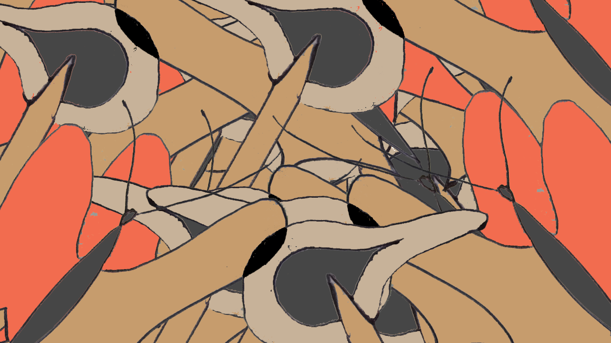

butterfly and chaos
The stringing of a grand piano is the game board. Three people play with 13 ping pong balls. While 2 players are trying to eject the balls from the board by tapping on the keyboard, the other player is trying to keep some of them inside.
coral shuffle
A crupier shuffles a Spanish deck and deals cards to a chorus of players. Players never let go of their card, they use it to figure out what word to say until they run out of breathe.

Neurobodrio
A group of people simulates a neural network. A special deck of cards determines how each neuron has to react to the stimulus of a sequence of photographs displayed on a screen.